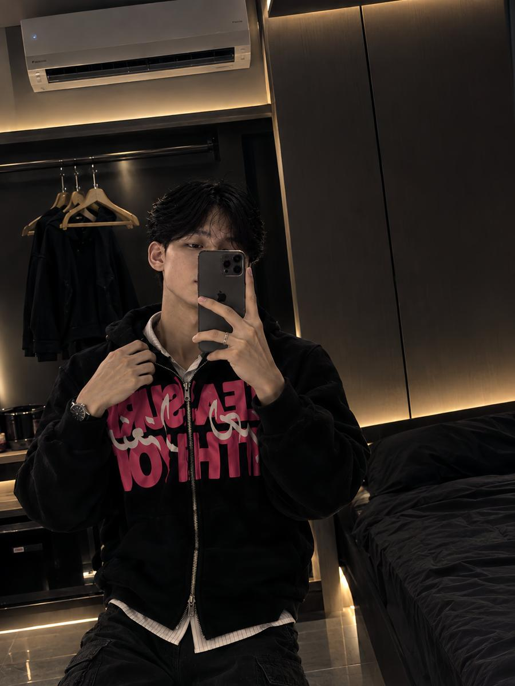

Dunia pertama saya adalah pondok.
Di pesantren, saya belajar ilmu agama, adab, dan disiplin. Hari-hari diatur oleh waktu ibadah dan waktu belajar. Dari sana saya memahami bahwa ilmu bukan hanya untuk dipahami, tetapi juga untuk dijalani.
0%
Portofolio · Citeureup, Bogor
Perjalanan yang masih terus berjalan.
Mahasiswa dengan pengalaman di bidang pendidikan dan logistik. Terus belajar, berkembang, dan membangun langkah menuju masa depan yang lebih baik.

Tentang saya
Dulu, dunia saya hanya sebatas lingkungan pondok pesantren. Setelah lulus, saya memberanikan diri melangkah keluar: mengajar, belajar langsung dari kyai sambil bekerja, lalu terjun ke dunia logistik yang sebelumnya belum saya kenal. Dari pengalaman-pengalaman baru itulah saya tumbuh menjadi pribadi yang lebih dewasa.
Perjalanan ini mengajarkan saya komunikasi, tanggung jawab, disiplin, dan kemampuan beradaptasi. Setiap pengalaman, sekecil apa pun, adalah bagian dari proses bertumbuh.
Cerita hidup
01 / 04
Di pesantren, saya belajar ilmu agama, adab, dan disiplin. Hari-hari diatur oleh waktu ibadah dan waktu belajar. Dari sana saya memahami bahwa ilmu bukan hanya untuk dipahami, tetapi juga untuk dijalani.
Setelah lulus, saya mulai mengajar di Pondok Pesantren Nurul Amal. Untuk pertama kalinya saya berdiri di sisi yang berbeda: menyampaikan ilmu, bukan hanya menerimanya.
Saya melanjutkan mengajar di Majelis Ta'lim Bani Sulaiman sambil ngalap berkah (mencari keberkahan) dan belajar langsung dari kyai. Di sana saya juga bekerja di perusahaan milik kyai, dan memahami bahwa ilmu dan kerja berjalan beriringan.
Dari lingkungan pondok, saya memberanikan diri terjun ke dunia logistik: gudang, paket, dan ritme kerja yang baru. Banyak hal yang belum saya ketahui, dan dari situlah saya belajar serta tumbuh dewasa.
Perjalanan
Hingga 2023
Santri · Lulus 2023
Dunia pertama saya: mendalami ilmu agama, adab, dan disiplin dalam kehidupan pesantren.
24 Agu 2023 – 5 Nov 2023
Pengajar
Langkah pertama setelah lulus: mengajar di lingkungan pondok pesantren.
11 Des 2023 – 7 Apr 2024
Pengajar · Belajar sambil bekerja
Mengajar sambil belajar langsung dari kyai, sekaligus bekerja di perusahaan milik kyai. Berani mencoba hal baru, membangun komunikasi, dan membantu proses pembelajaran.
17 Jun 2025 – 24 Mei 2026
Warehouse Staff
Berpengalaman dalam operasional gudang, penanganan barang, pengelolaan paket, dan proses logistik.
12 Jun 2026 – Sekarang
Warehouse Staff
Terlibat dalam operasional gudang dan distribusi, penanganan barang, serta mendukung kelancaran proses logistik.
Kekuatan
Menyampaikan materi dan berkoordinasi dengan jelas.
Bekerja bersama tim dalam operasional harian.
Berpindah dari dunia pondok ke dunia pendidikan dan logistik.
Menjaga tugas dan barang yang dipercayakan.
Menyeimbangkan kuliah dan pekerjaan.
Penanganan barang dan pengelolaan paket.
Mendukung kelancaran proses distribusi.
Sifat dasar: pembelajar sejati Terus belajar. Terus berkembang.
Filosofi
“Kita tidak bisa menghubungkan titik-titik dengan menatap ke depan; kita hanya bisa menghubungkannya dengan menengok ke belakang. Karena itu, percayalah bahwa titik-titik itu akan terhubung di masa depan.”
Setiap pengalaman menjadi bagian dari gambaran yang lebih besar. Meski langkah berikutnya belum pasti, saya memilih untuk terus belajar, terus bergerak, dan memercayai perjalanan ini.
Kontak
Punya pertanyaan, ingin berdiskusi, atau sekadar berkenalan? Silakan hubungi saya lewat salah satu kontak di bawah ini.
Hubungi via WhatsApp